-

Lake Burrendong State Park
-
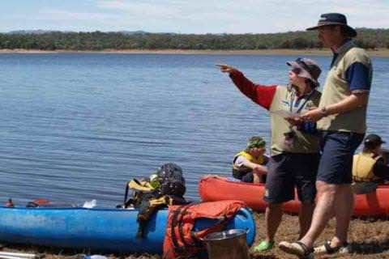
Lake Burrendong Sport and Recreation Centre
-

Mookerawa Waters State Park
-
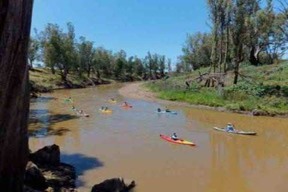
Macquarie river canoe and kayak trail
-
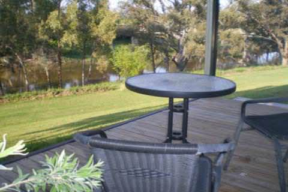
Wellington Riverside Caravan Park
-
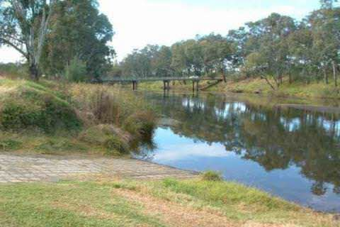
John Oxley Park
-

BIG 4 Dubbo Parklands
-
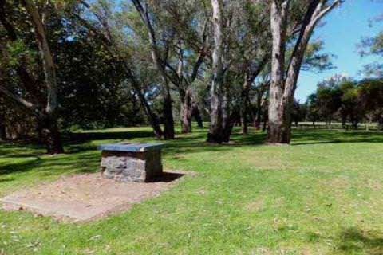
Cameron and Pioneer Parks
-
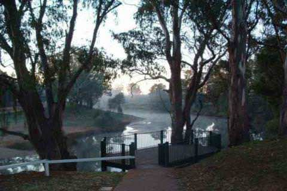
Sir Roden Cutler Park
-
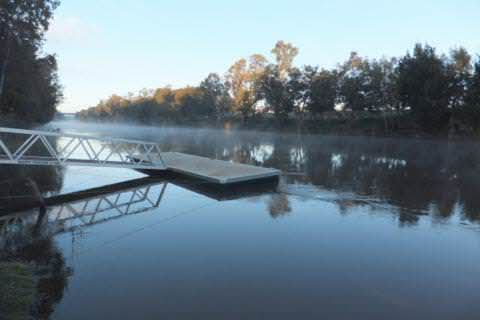
Riverbank Park
-
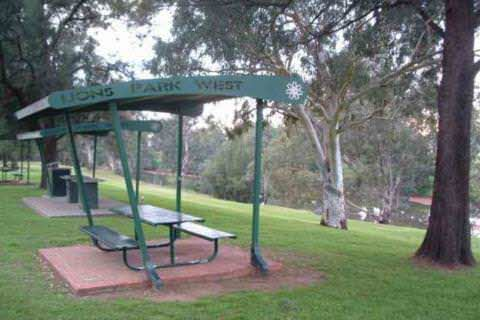
Lions Park West
-

Langley's River Cruises
-
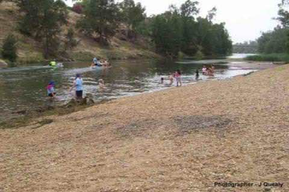
Sandy Beach
-
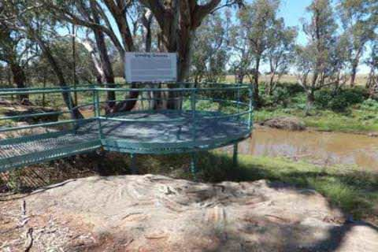
Terramungamine Reserve
-
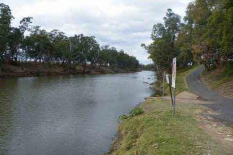
Rotary Riverside Park
-
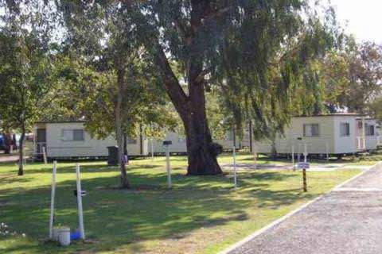
Macquarie Caravan Park
-

Sandy Creek Rest Area
-
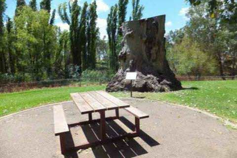
Lions and Macquarie Parks
-

Victoria
-

Willie Retreat
-

Nyngan Riverside Tourist Park
- Lake Burrendong State Park
- Lake Burrendong Sport and Recreation Centre
- Mookerawa Waters State Park
- Macquarie river canoe and kayak trail
- Wellington Riverside Caravan Park
- John Oxley Park
- BIG 4 Dubbo Parklands
- Cameron and Pioneer Parks
- Sir Roden Cutler Park
- Riverbank Park
- Lions Park West
- Langley's River Cruises
- Sandy Beach
- Terramungamine Reserve
- Rotary Riverside Park
- Macquarie Caravan Park
- Sandy Creek Rest Area
- Lions and Macquarie Parks
- Victoria
- Willie Retreat
- Nyngan Riverside Tourist Park